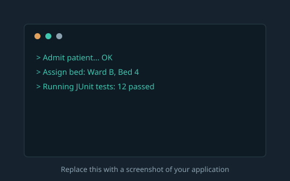
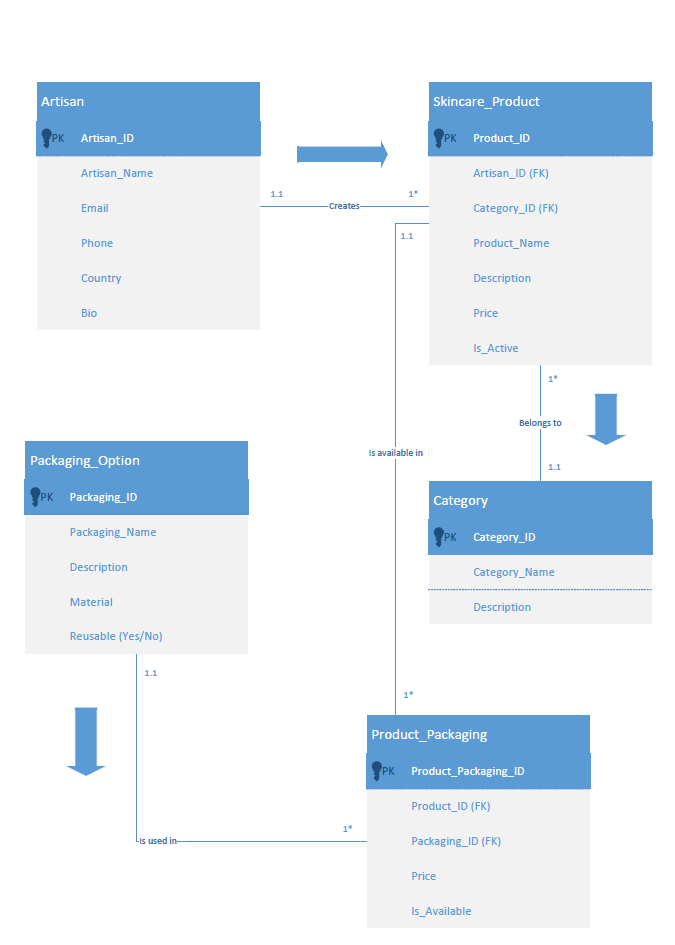

Projects
A couple of pieces of coursework that show a different side of my technical skills — one focused on programming logic, the other on data modelling.

Hospital Patient Admission System
A console-based patient admission and bed management system built in Java as a multi-class application. It uses a class hierarchy with enums to model patient types, an ArrayList to manage admission records, and a 2D array to track bed availability across wards. The system includes JUnit 5 tests to verify core logic and was built as a Maven project in NetBeans.
View the Hospital Patient Admission System source code
Database Design & ERD Modelling
A database design project modelling an artisan skincare marketplace. The diagram maps five entities — Artisan, Skincare_Product, Category, and Packaging_Option — with a Product_Packaging junction table used to resolve the many-to-many relationship between products and their packaging options. The wider assignment also involved evaluating relational versus NoSQL approaches for structuring this kind of data.